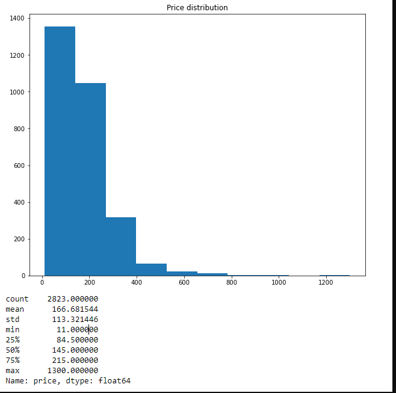
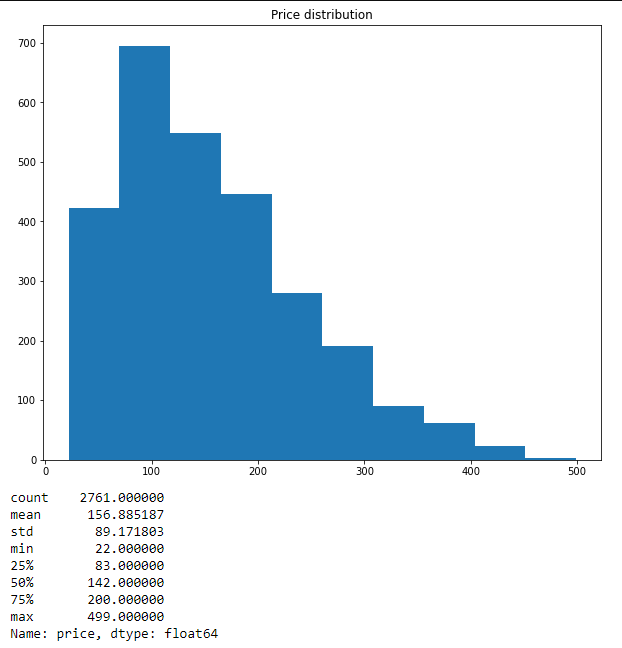
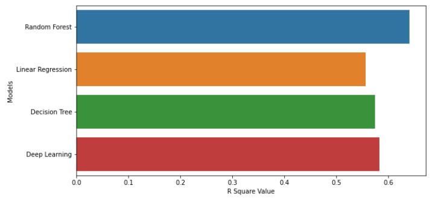

Machine Learning
Machine Learning
The lifecycle of our machine learning model:
Step 1: Preprocessed The Raw Data
Step 2: Performed an exploratory analysis
Step 3: Features Selection
Step 4: Model Optimization
Step 5: Deep Learning Model
Step 6: Final Results
With the raw data loaded into a DataFrame using PyMongo, the first step was to convert all numerical variables into int / float format for processing using to_numeric(). Next, we checked for nulls and decided to drop the null values since it accounted for a small percentage of our rows. Once this was done, we encoded all categorical variables into numerical values that can be read by a Machine Learning algorithm.

In our exploratory analysis, we used the describe() method to create a statistical summary of our variables so we could assess our measures of central tendency and try to identify outliers. The next step was to use corr() to find variables that have a strong correlation with our target variable, price. We chose variables with a correlation coefficient above 0.20 to be used as features in our machine learning model. The following is a heatmap that shows correlation between our chosen variables.

With preprocessing complete, and features selected, we were ready to start testing our machine learning models. Our X variables included the features shown in the correlation matrix above, and our 'y' variable was price. We split the data into training and testing sets with a random state of 45, test size of 30% and training set size of 70%. We chose three different types of regression models to predict our target variable: Random Forest Regressor, Linear Regression, and Decision Tree regression. We wanted to see how these three different models will perform, and which one of them will give us the highest R squared value.
The Random Forest Regressor algorithm is a supervised learning model that can be used for classification and, in our case, regression. We chose this algorithm as it is good at learning complex and non-linear relationships, and is easy to interpret. Limitations for this model include: chances of overfitting and may require more memory to run model. This model gave us the highest R squared value (0.56) out of all models tested, as shown below. Of course, we also utilized the simple Linear Regression supervised learning model, which is easy to implement, less complex when compared to other algorithms, and simple to interpret. Limitations for this model include: the model can be negatively affected by outliers and it could oversimplify real world problems by assuming linear relationships between variables. This model gave us an R squared value of 0.51. The final model we used was the decision tree model, which is a simpler version of the Random Forest model. We included this model as it is easy to understand and interpret, works with numerical and categorical features, and requires little data preprocessing. However, one drawback of this model is a tendency to overfit. The decision tree model gave us an R squared value of 0.47, which was the lowest of all models tested.

As we can see, further optimization needs to be done to make our models more accurate. I plan on optimizing these models for the next segment by:
Dimensionality reduction by means of feature elimination or feature reduction
Modifying the train, test split
In the next segment, we also plan on utilizing the comments column in our dataset to perform a sentiment analysis using NLP.
Since the previous segment, we have worked on optimizing the machine learning model to boost R squared scores for each model. We did so by reselecting appropriate features from the dataset, changing the train test split to 67%, 33% respectively and removing outliers that were present in the target variable. We have also added a Deep Learning Model with two hidden layers. The final feature selection for our machine learning (based on correlation coefficients) models is as follows:
room_type
accomodates
bathrooms
bedrooms
beds
price
security_deposit
cleaning_fee
air_conditioning
family_kid_friendly
elevator
As we can see from the image below, there were outliers present in the price distribution which were giving the data a right skew. As we can see from the statistical summary, most of the samples from the price column are within the range of $215 and few samples that are less than $20 and greater than $500.
We ruled these ranges as outliers and removed them from the price distribution, which gave us a more normal looking distribution as seen below.
In addition to our model optimization efforts, we added a Deep Learning model. They are useful because their structure of layers can be adapted to many types of problems, and their hidden layers reduce the need for feature engineering. One weakeness of this model is that they are computationally intensive to train.
Here is a chart comparing the R squared value of all the optimized models.
Random Forest R Square Value : 0.6401468962074119
Deep Learning R Square Value : 0.5832696557887808
Decision Tree R Square Value : 0.5747005190100378
Linear Regression R Square Value : 0.5567145646136205